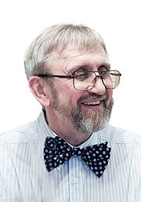

Юрий Степанович Ананич
(23 ноября 1955 — 28 февраля 2015)
Белорусский архитектор, внёсший вклад в формирование архитектурного облика современного Минска и других белорусских городов. Член Белорусского союза архитекторов.
Временная линия
1955
23 ноября 1955 родился в Минске, отец — машинист скорого поезда.
1978
Закончил архитектурный факультет Белорусского государственного политехнического института (сейчас БНТУ) по специальности «градостроительство». После завершения учёбы на протяжении тридцати лет работал в РУП «Институт Белгоспроект».
2007
Завершилось строительство по проекту архитектора, победившему в открытом конкурсе, объявленном МИДом Российской Федерации. Комплекс, включающий в себя четырёхэтажный жилой дом из трех секций и двухуровневую спортивную постройку, органично вписался в природный и архитектурный ландшафт. Так, спортивный зал, помимо основного предназначения, закрыл собой Седьмую городскую больницу и замкнул пространство двора. Крыша гаража-автостоянки служит внутренним двориком. Цокольный этаж-подиум выложен красным кирпичом, а округлые бело-голубые фасады разворачиваются в сторону Свислочи и улицы Орловской.
2014
В День Независимости Республики Беларусь в Могилеве состоялось торжественное открытие торгового центра «Перекресток-центр». Разработка архитектурно-проектной документации объекта общей площадью 6500 м² шла параллельно со строительством. Юрий Ананич стремился удовлетворить как коммерческие интересы инвестора, так и требования городской администрации. Центром композиции стал банковский комплекс, точнее, его приподнятое центральное ядро с зенитным фонарем. Вокруг него выстроились универсальный торговый зал и более нагруженное архитектурными деталями помещение для торговли промышленными товарами. Козырьки у входов украшены синими алюминиевыми витражами. Пространство организовано удобно с точки зрения людей с ограниченными возможностями, вокруг здания оформлена зона отдыха.
Значимые работы архитектора
| Наименование объекта | Дата создания |
|---|---|
| Реконструкция здания для размещения Отделения № 3 БЕЛВНЕШЭКОНОМБАНКА в г. Минске по ул. Серова, 4 | 2000 |
| Дворец культуры «СТРОИТЕЛЬ» в г. Сургут РФ | 2002 |
| Надстройка магазина над выходом со станции метро «МОСКОВСКАЯ» по проспекту Ф. Скорины в г. Минске | 2005 |
| Реконструкция центральной части г.Минска в пределах 1-го кольца | 2005 |
| Застройка территории, прилегающей к Национальной библиотеке РБ | 2008 |
| Торговый центр с центром банковских услуг в Могилёве | 2014 |